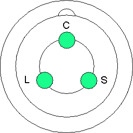

Operating Documentation
Direction 5193755-800, Rev# 8
BrightSpeed (Ltd. Access) Service Methods - Adv
Operating Documentation |
The cathode HV connection between the HV Transformer and the Xray tube, and the anode HV connection from the HV transformer to the HEMIT Tank to the Xray tube, are made with 3 connductor, shielded, 75kV HV cables.
Illustration 1: HV Cable Bottom View

The cathode HV cable from the HV tank to the Xray tube has to carry the negative HV kV (<= -70kV) and also the filament current for the large and small focal spots directly from the HV tank to the Xray tube. Small filament is connected between S and C. Large filament is connected between Land C.
The anode HV cable from the HV tank to the HEMIT tank has to carry the positive HV kV (<= +70kV). The HV cable from the HEMIT to the x-ray tube has to carry the HV kV (=< +70) and also the tube stator current. The three stator winding are connected to L, S, and C.